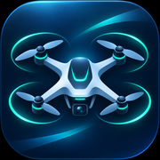

ACADEMIA UAS · AESA · 2026
STS Drones
Preparación STS-01 y STS-02 · Acceso A1/A3, sin A2
BANCO AMPLIADO Y DINÁMICO
509 preguntas para entrenar de verdad.
Simulacros ilimitados de 40 preguntas, práctica por las 8 materias, corrección inmediata o al final y repetición de tus fallos. Cada intento mezcla las preguntas y sus respuestas.
40 preguntas · 40 minAprobado 30/408 materiasInstalable en iPad
0Preguntas distintas vistas
—Acierto acumulado
0Fallos pendientes
0Marcadas para repaso
Simulacros de examen
Siempre preguntas nuevas al azar cuando sea posibleEntrenamiento personalizado
Escoge el objetivoPreguntas por materia
Trabaja donde más fallasImportante: son preguntas originales de práctica, no preguntas oficiales filtradas de AESA. Los simulacros de 40 preguntas cubren las 8 materias con un reparto equilibrado orientativo; no se presenta como una distribución oficial de AESA. La plataforma conserva tus estadísticas en este navegador.
Fuentes oficiales de referenciaAESA: requisitos y formato del examen STS
AESA: syllabus de las ocho materias
EASA: normativa consolidada de UAS (junio 2026)
AESA: syllabus de las ocho materias
EASA: normativa consolidada de UAS (junio 2026)
Pulsa una opción. Verás la respuesta correcta y una explicación.
Simulacro
Resultado
0 %
0Aciertos / total
0Errores y sin respuesta
0 minTiempo utilizado